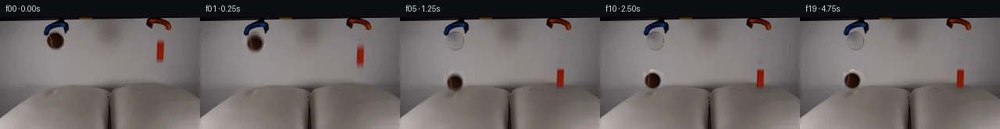

![首帧]()

Round 00
2026-11-04T17:07:19.243321+00:00像素候选变化代码 +343/−0inspection 更新
pixels 7ef3e2fb20463795 · code bd2a7c8d36262c9b
查看本轮 generate.py 真实 diff
--- previous/generate.py
+++ current/generate.py
@@ -0,0 +1,343 @@
+#!/usr/bin/env python3
+"""
+PixelWorld vision-input continuation for case_0002.
+
+Local pixel operations only. Frame 0 is the untouched source frame. The two
+released objects (brown tennis ball, orange block) fall, land on the soft
+pillows with damped compression/rebound, and settle. Sprites are cut from
+frame 0 by alpha estimation against a smooth wall model; vacated pixels are
+inpainted; the pillows are locally domain-warped for the dents.
+"""
+from pathlib import Path
+import numpy as np
+from PIL import Image
+from scipy.ndimage import gaussian_filter, median_filter, map_coordinates
+from scipy.interpolate import interp1d
+
+CASE = Path(__file__).parent
+rng = np.random.default_rng(20261105)
+
+# ---------------------------------------------------------------- load frame
+F0 = np.array(Image.open(CASE / "first_frame.png").convert("RGB"))
+H, W = 144, 256
+assert F0.shape == (H, W, 3)
+F0f = F0.astype(np.float32)
+
+# --------------------------------------------------- pillow top silhouette
+SURF_X = [0, 40, 56, 72, 88, 100, 120, 134, 140, 146, 160, 175, 190, 205, 220, 232, 248, 255]
+SURF_Y = [132, 100, 90, 89.5, 85, 84, 85, 86, 90, 86, 85, 84.5, 85, 87, 89, 93, 100, 103]
+surf = interp1d(SURF_X, SURF_Y, kind="linear", fill_value="extrapolate")
+SX = np.arange(W)
+SURF = surf(SX).astype(np.float32)
+
+# ------------------------------------------------------------- object masks
+R, G, B = F0f[:, :, 0], F0f[:, :, 1], F0f[:, :, 2]
+blue = (B > 60) & (B - R > 20) & (B - G > 10)
+
+# ball geometric alpha
+bcx, bcy, br = 70.3, 30.0, 10.7
+yy, xx = np.mgrid[0:H, 0:W]
+bd = np.sqrt((xx - bcx) ** 2 + (yy - bcy) ** 2)
+ball_geom = np.clip((br - bd) / 1.9, 0, 1) # full to r~8.8, zero at 10.7
+
+# block spatial envelope (includes observed vertical blur fringe)
+ekx = np.clip((5.7 - np.abs(xx - 205.0)) / 1.4, 0, 1)
+eky = np.clip(np.minimum((yy - 29.5) / 4.0, (57.3 - yy) / 3.8), 0, 1)
+block_env = ekx * eky
+
+# ------------------------------------------------------- smooth wall model
+# Everything above the pillow shadow band that is not an object is wall.
+obj_cover = (ball_geom > 0.06) | (block_env > 0.06) | blue
+wall_zone = np.zeros((H, W), np.float32)
+wall_zone[4:80, :] = 1.0
+wall_zone[obj_cover] = 0.0
+wall_zone[4:18, 50:90] = 0.0 # left grabber shank zone
+wall_zone[2:18, 185:222] = 0.0 # right claw zone
+w = wall_zone
+num = gaussian_filter(F0f * w[:, :, None], sigma=(5, 5, 0))
+den = gaussian_filter(w, sigma=5)[:, :, None]
+WALL = np.clip(num / np.maximum(den, 1e-3), 0, 255)
+
+# ---------------------------------------------------------- sprite alphas
+# ball: alpha = geometry * confidence from color distance to wall
+wdist = np.sqrt(((F0f - WALL) ** 2).sum(axis=2))
+ball_conf = np.clip((wdist - 16) / 34, 0, 1)
+ball_a = ball_geom * ball_conf
+ball_a[(B > 64) & (B - R > 14)] = 0 # protect blue claw fringe
+ball_a = gaussian_filter(ball_a.astype(np.float32), 0.5)
+ball_a[ball_geom == 0] = 0
+
+# block: chroma un-mix along green channel vs local wall, inside envelope
+kg = 23.0 # intrinsic core green
+kb = 5.0
+ag = np.clip((WALL[:, :, 1] - G) / np.maximum(WALL[:, :, 1] - kg, 1.0), 0, 1)
+ab = np.clip((WALL[:, :, 2] - B) / np.maximum(WALL[:, :, 2] - kb, 1.0), 0, 1)
+block_a = block_env * np.maximum(ag, 0.85 * ab)
+block_a = gaussian_filter(block_a.astype(np.float32), 0.45)
+block_a[block_env == 0] = 0
+
+# premultiplied intrinsic sprite color (un-mix the wall contribution)
+def premult(a):
+ return np.clip(F0f - (1 - a[:, :, None]) * WALL, 0, 255)
+
+ball_prem = premult(ball_a)
+block_prem = premult(block_a)
+
+# crop sprite windows (padded for rotation / blur)
+def crop(a, prem, x0, y0, x1, y1):
… diff truncated; 256 more lines …